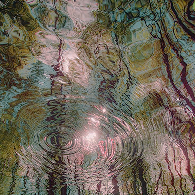
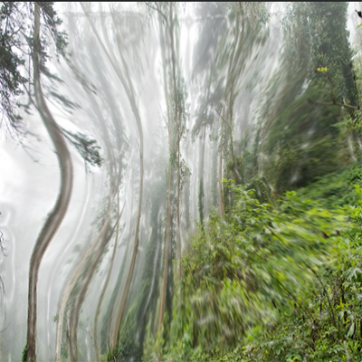
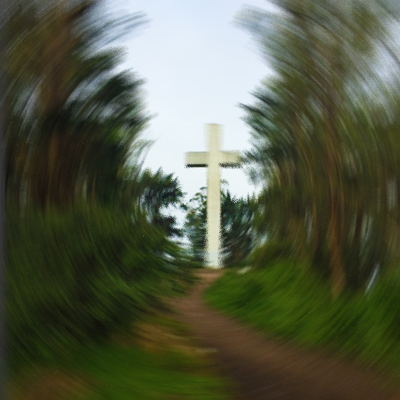
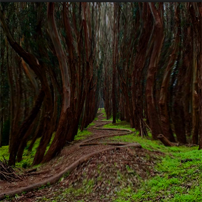

Hello and welcome! It is a joy to present to you three different spots where one can enjoy nature walks that are not only good for you but also help your reconnection to nature and spirituality/faith. These three locations are inside San Francisco. While San Francisco is a well-known, busy city, at times it can feel a bit overwhelming with all its noise, which made me curious and motivated to find some nice spots where one can get away from the city and enjoy the sweet, calm sounds of nature. Especially since we live in a world where technology gets a lot of the attention of your eyes, it is healthy to step away and get a break from all distractions and immerse oneself in the beauty of nature that does no harm to the eye. What I looked for were places where I saw myself comfortable going solo or with friends. Places that offer great overall scenery. I compare which trial of walk is denser and which is less dense, the viewpoints, and whether it has a good overall location and weather.. Enjoy the walk through this site!
SAN FRANCISCO · UCSF AREA

This site is known to be the closest thing to a real rainforest in San Francisco. Known for its fog-soaked/ cloudy atmosphere, delivering a cool environment with a nice and rich feel to explore birdlife. It is common for people to go hiking here; however, it is still a friendly walking area. Since this forest offers a great place for bird watching, you may see photographers. This place offers short, but at the same time, an immersive nature break away from the city. Walking around here makes you think about camping! It is a good place to have a little connection to nature. This place is located in central San Francisco near UCSF, so in a way it is a convenient location. The weather is not too hot, it typically stays in the 50-60s. It feels like a winter walk due to how this place is very shaded and has little direct sunlight.
Pros:SAN FRANCISCO · TWIN PEAKS AREA

Mount Daverson is a very beautiful place located in San Francisco’s highest natural point (938 ft). This place is nice if you want a mix of views, including eucalyptus forest, coastal scrub, and panoramic city views. This place is known for the concrete cross at the top (summit). This place gives a sense of a foggy rainforest woodland; however, walking towards the east side, it opens a view into a grassland and wildflowers. Walking up towards the cross is truly a breathtaking experience. This place is more on the quiet side and uncrowded. This site is also family-friendly, along with photography lovers engaging throughout this nature and peaceful nature walk. Since this place is located at a high point, it can limit people who are sensitive to walking in high points however, the height of this place does not really impose a threat, so it is good if you are feeling more adventurous yet still staying on the safe side!
Pros:SAN FRANCISCO · PRESIDIO FOREST

Lovers’ Lane and the Wood Line are located in the southeastern part of the Presidio, near the Presidio Gate, and the trail runs through a really pretty eucalyptus forest. It’s a popular spot for students, casual walkers, and anyone who wants an easy nature break without leaving the city. The weather in this area is usually cool and a little breezy, and the trees keep the trail shaded most of the time, which makes it a comfortable walk even on warmer days. It’s a simple trail that still feels special because of the scenery and the atmosphere. The walk experience here feels a bit artistic, enhancing one’s walk.
Pros: